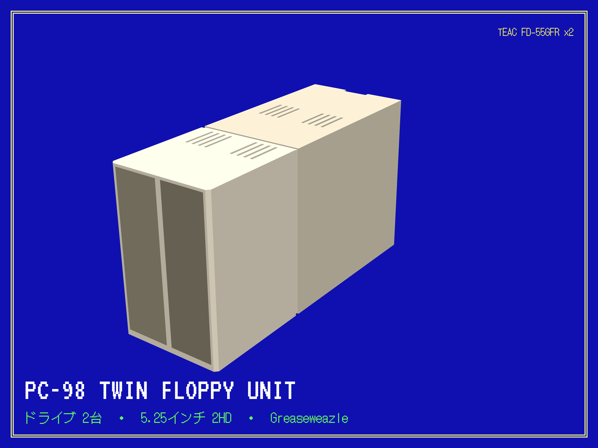
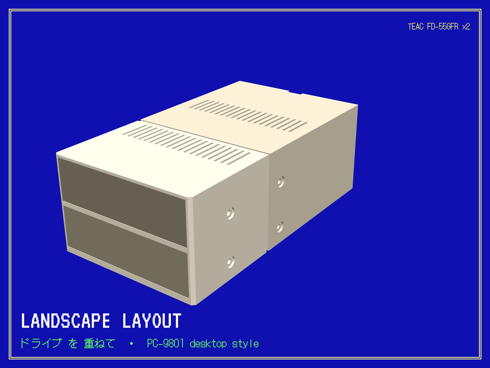
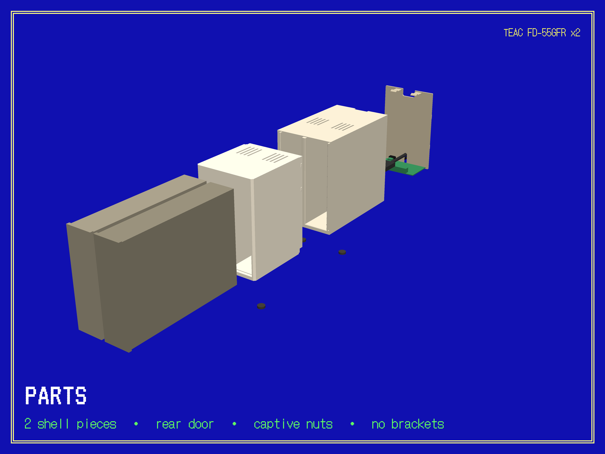

What it is ごあんない

A 3D-printed box that holds two TEAC FD-55GFR 5.25" floppy drives and a Greaseweazle V4, so one USB cable gives a modern computer two real PC-98 floppy drives.
With the Greaseweazle's own tools you can read a disk to an image file, write an image to a blank and copy a game set disk by disk. With the bridge from this project you can run a game in an emulator while the disks stay in the drives, swapping them when the game asks, the way the real machine did.
Two layouts come from the same model: side by side, drives on edge like the PC-80S31 and X68000 drive units, or stacked, drives flat like a PC-9801 desktop. Same hardware, same screws.
The model is on Cults3D, the model source, print files and software are on GitHub. Everything here is free to print and share with credit, not for sale.
Parts to buy 部品リスト
Everything for one unit, with the shops used. Prices change, so none are given.
| Part | Qty | Where | Notes |
|---|---|---|---|
| TEAC FD-55GFR drive | 2 | eBay | This exact model: the shell is sized to its frame and bezel. "Untested" is normal; check each drive before building around it (see Caring for disks). |
| Greaseweazle V4.1 | 1 | decromancer.ca | The USB floppy controller, with the 34-pin header the ribbon plugs into. |
| 5 V / 12 V power supply | 1 | deviceside PSU5 | Floppy-drive Molex power. |
| Y power cable | 1 | deviceside YCABLE | Splits the supply to both drives. |
| 34-pin ribbon, twisted, 36" | 1 | cablesonline | Card-edge connectors for 5.25" drives. The twist makes the two drives A and B. |
| USB-C cable | 1 | Amazon | Board to computer, through the notch in the rear door. |
| 6-32 × 3/8" pan-head screws | 8 | Amazon | Drives to the shell floor, through the washers. |
| #6 flat washers | 8 | Amazon | Under the drive screw heads. |
| M2.5 × 10 screws | 4 | Amazon | Greaseweazle to its posts. |
| M2.5 hex nuts | 4 | Amazon | Pressed into the pockets under the floor. |
| Rubber bumper feet | 4 | Amazon | Into the recesses underneath. |
| PETG filament | ≈1.1 kg | any | Printed on a Prusa MK4S. |
Also useful: isopropyl alcohol, 90 % or stronger, cotton swabs, and a few blank 5.25" HD disks for testing drives before any original goes in.
Printing プリント
Pick one folder from the print files. They are two versions of the same box, not ten parts. Five files in each, all in millimetres and already rotated for printing.

Print order: test rings first, it saves a day
- 0a_FIT_TEST_front_ring, about 1 hour. Push a drive through it from the front, back end first. The metal frame should slide through without forcing, and the beige bezel should drop into the recess and sit flush. Try both drives; bezels vary a little.
- 3_back_panel, then 0b_FIT_TEST_rear_ring, about 1.5 hours. Tilt the panel's top away from you, drop its bottom tabs into the slots in the ring's sill, swing the top in until the clips click. It should sit evenly, about 1.5 mm inside the frame.
- If both fit, print 1_shell_FRONT and 2_shell_REAR. If not, stop: the fit numbers are one line each in the model source.
Material and slicer settings
- PETG, not PLA. 0.4 mm nozzle, 0.2 mm layers.
- Perimeters: 6 for both shell halves and both test rings, because the screw seats want solid plastic under them. 3 for the back panel. Infill about 20 %.
- Supports: off. Every part prints without them. The slicer may flag a few small flat spots: the step inside each drive opening and the roofs of the nut pockets. Leave them, they have built-in bridge layers.
- Seam: Rear for the shells, it lands on the underside. Aligned for the back panel.
- Elephant-foot compensation: keep the profile's default, about 0.2 mm. The front's first layer is the mouth of the drive openings.
- Brim: none. Smooth PEI needs glue stick with PETG; satin or textured sheets don't, and the sheet's texture becomes the finish of the front.
- Largest footprint 160 mm, tallest part 173 mm: any 200 × 200 bed, one part at a time.
Size check in the slicer
| Part | Side by side (X × Y × Z mm) | Stacked (X × Y × Z mm) |
|---|---|---|
| 0a_FIT_TEST_front_ring | 102.4 × 157.0 × 12.0 | 159.0 × 99.8 × 12.0 |
| 0b_FIT_TEST_rear_ring | 102.4 × 157.0 × 27.0 | 159.0 × 99.8 × 27.0 |
| 1_shell_FRONT | 102.4 × 157.0 × 120.0 | 159.0 × 99.8 × 120.0 |
| 2_shell_REAR | 102.4 × 157.0 × 173.0 | 159.0 × 99.8 × 173.0 |
| 3_back_panel | 99.1 × 152.5 × 24.0 | 155.7 × 98.0 × 24.0 |
Building くみたて

Before any of this, test both drives on a blank disk and clean their heads; see Caring for disks. It's much easier with the drives on the bench than in the box.
- Check the drive jumpers. Both drives stay on
D1, the factory setting; the twisted ribbon tells them apart. Leave the other straps as they came. - Press the four M2.5 nuts into the hex pockets on the underside of the rear shell. A flat screwdriver handle does it; they only need to sit flush.
- Screw the Greaseweazle to the four posts on the rear shell's floor with the M2.5 × 10 screws, components up, USB-C socket toward the back.
- Slide the drives into the front shell from the back, bezels first, until each bezel drops into its recess and sits flush with the face.
- Plug in the ribbon: the end connector past the twist goes on one drive, the middle one on the other, the header on the board. Note which drive got the end connector; it becomes drive A. Plug the Y cable into both drives' power sockets.
- Push the two shells together. The front's strip slides inside the rear until the hidden tabs click, across the roof and down each side. A firm pull separates them again.
- Screw the drives down through the floor: a washer under each 6-32 screw head, four screws per drive, into the drives' own threaded holes. These screws are what ties the two halves together, so tighten them evenly.
- Plug in the USB-C cable and lead it through the notch in the door's bottom edge; plug in the power lead through its hole.
- Snap the door on: bottom tabs into the sill, swing the top in until it clicks, then the side tabs click as it seats.
- Stick the feet into the recesses underneath.
Opening it later: pull the top edge of the door, unplug the cables, undo the eight drive screws, and pull the halves apart.
Software ソフトウェア
Reading, writing and copying disks is done with the Greaseweazle host tools themselves: gw read, gw write, with --format pc98.2hd for PC-98 disks. What this project adds is the bridge, Python on top of those tools. It includes no emulator and no BIOS files: bring your own.
The bridge
It shows the two real drives as two disk-image files, FD1.hdm and FD2.hdm, that an emulator opens like any other image. Reads come from the drive on demand, writes go back to the disk about a second after the game stops writing, and a disk swap is noticed through the drive's own disk-change line.
It needs a filesystem layer: libfuse on Linux, usually already there; WinFsp on Windows; FUSE-T or macFUSE on macOS. The window tells you if it's missing, with the link.
Install
python3 -m pip install mfusepy git+https://github.com/keirf/greaseweazle@latestThe Greaseweazle package contains C code, so that step needs a compiler unless a build for your Python already exists: gcc on Linux, Microsoft C++ Build Tools on Windows, xcode-select --install on a Mac. Ready-made downloads that skip this step are in preparation.
Use
python3 station.pyA window opens in your browser, in this same style. The first time, it asks you to put a disk in the left drive only and press Check: that's how it learns which unit is which. After that it's Start, then Play if RetroArch with the Neko Project II kai core is installed, or open the two files in your own emulator's first and second drive. The game boots from whatever disk is in the left drive, as on the real machine; games that want a system disk in one drive and the game in the other work the same way.
A disk whose write notch is covered shows as write-protected and its file is read-only, so the game can never write to it. To swap, open the lever, change the disk, close the lever, then answer the game. Wait a couple of seconds after a save before opening a lever. If a disk comes out first, the pending changes are dropped, never written to the next disk, and the log says so.
Press Stop when you're done; anything unsaved is written first. Full notes, including the bridge on its own and a flag for a drive whose track 0 has drifted: app/BRIDGE.md.
Caring for disks ディスクのとりあつかい
- Clean both heads. With the drive open, wipe the upper and lower heads with a cotton swab wet with isopropyl alcohol, 90 % or stronger, until a fresh swab comes away clean. Let them dry fully. Black residue on the swab is normal the first time and the reason to do this.
- Test on a blank. Write a full disk and read it back on the same drive, then read it on the other drive. A drive that only reads its own writing has a problem of its own.
- Read an original once. Make the image, verify it, and put the original away. Play from a copy written to a blank. Tape over the write notch of copies that the game never writes to.
Check a disk's surface through the window after a test: hold it to the light and turn the hub. A fine ring where there was none is the drive telling you its head is dirty or damaged. Stop using that drive for anything that matters until it passes a clean test again.
Disks go in label up with the lever open, then close the lever; a drive with a disk upside down reports no disk at all. Keep hands and cables off the big round motor disc on the underside while a disk is spinning: anything touching it slows the disk and corrupts reads.
Files and licence ファイルとライセンス
- Cults3D page: the print pack, free.
- Print files on GitHub: the same STLs, both layouts, with the print README.
- Model source: OpenSCAD, every fit number is a named line near the top.
- Software: the bridge and its guide.
- Parts list as a file.
Licence
The enclosure, its STL files, these pictures and the written guides are under CC BY-NC-SA 4.0: print it, share it, change it, as long as you credit the author, don't sell the files or prints, and share changed versions under the same terms.
The software is under the MIT licence.
The TEAC FD-55GFR dimensions come from TEAC's published specification. Names of other machines and products belong to their owners.